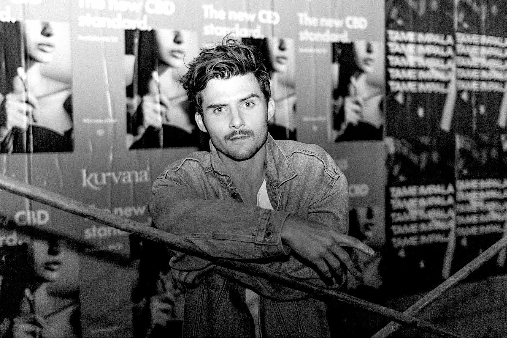
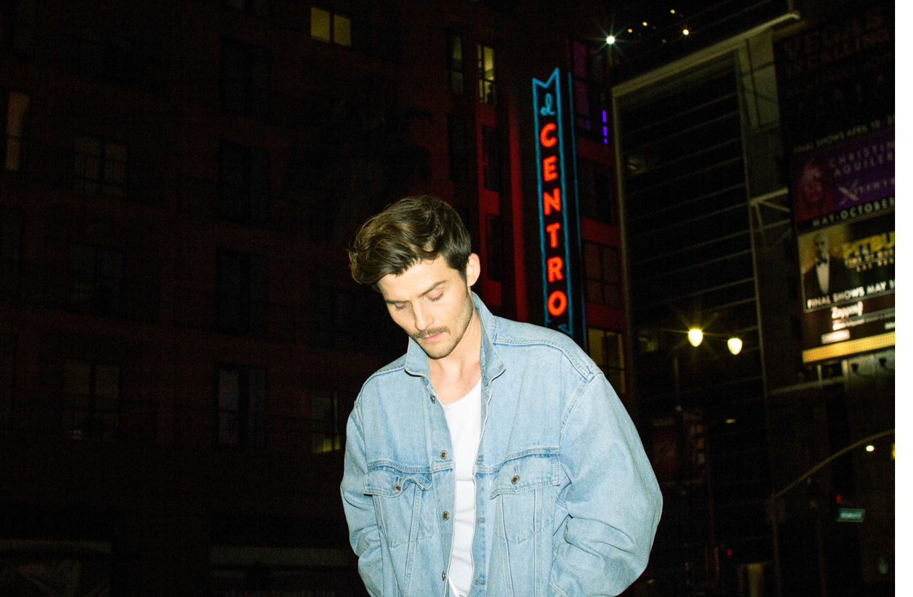
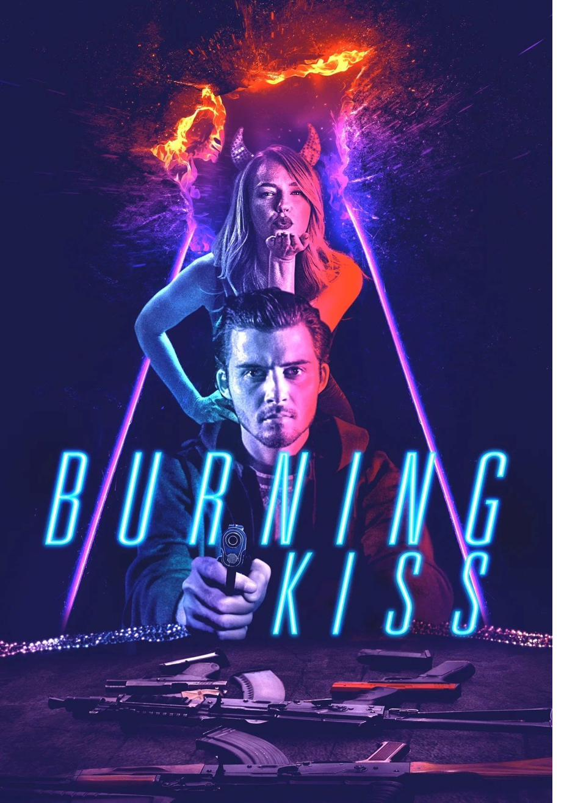
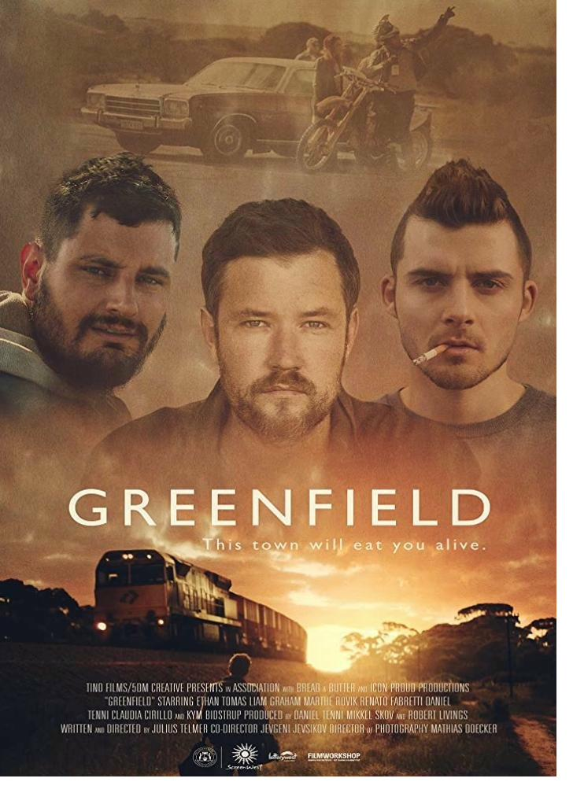
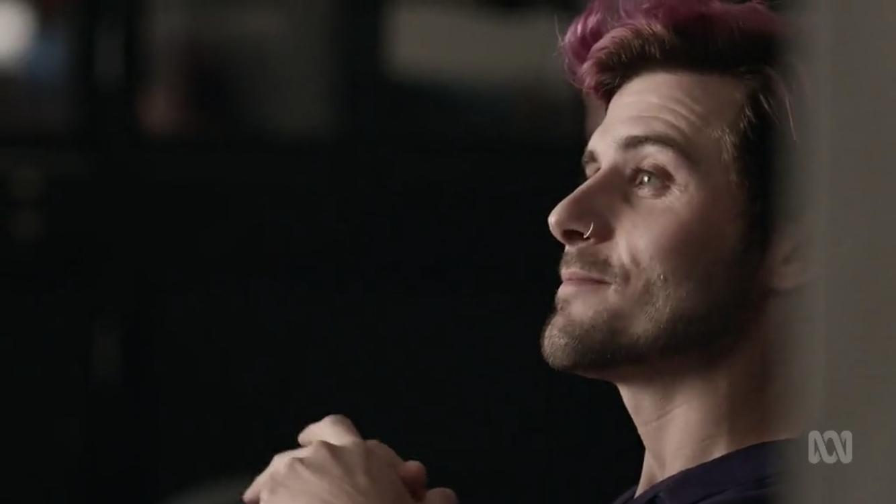
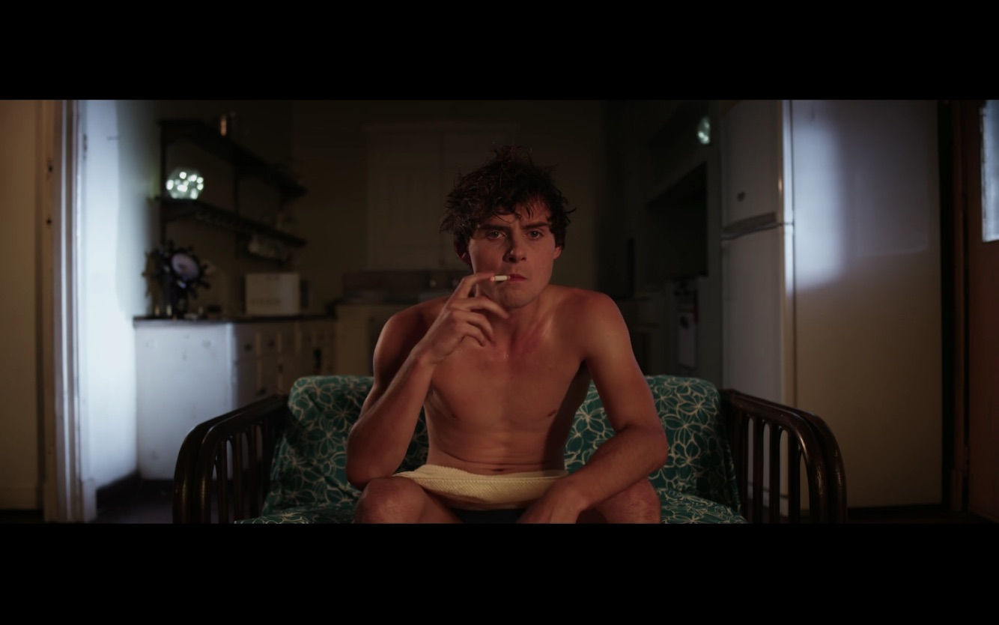
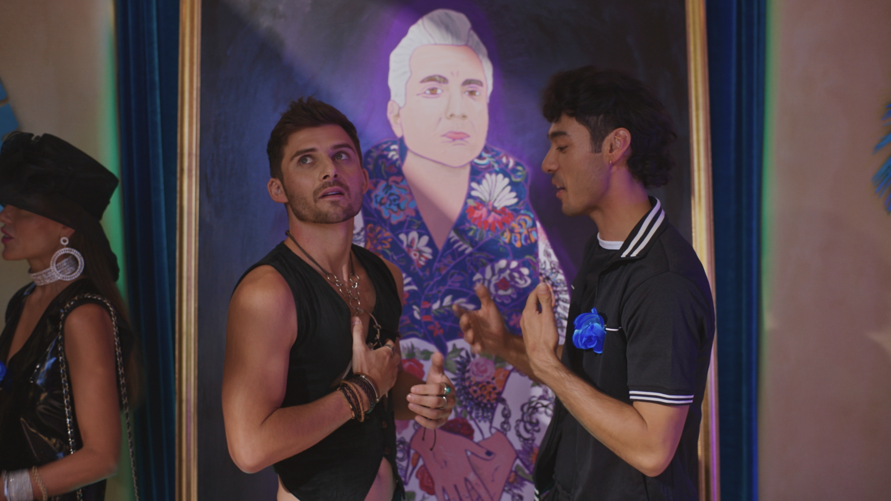
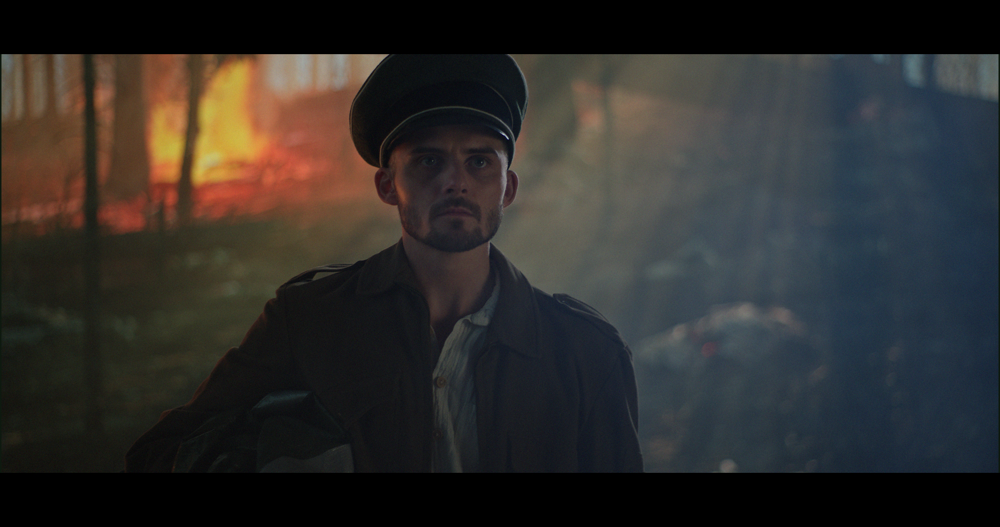
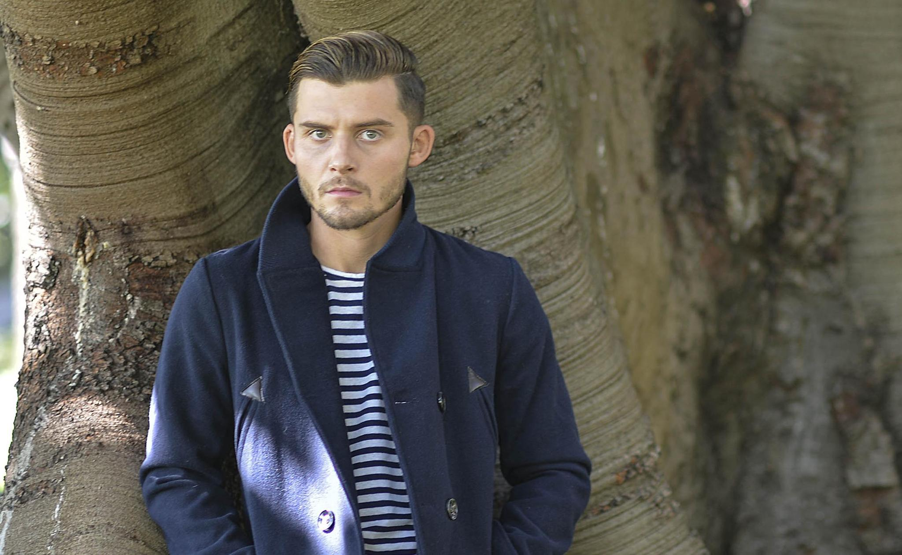

Scottish-born. Australian-raised. Emotionally raw performances across film & television.
Selected Credits

Lead role in this hallucinogenic summer noir. A moody drifter seeking redemption in a surreal landscape of obsession and consequence.

Lead in the award-winning Danish-Australian drama. Won Best Actor at the Nordic International Film Festival for this role.

Recurring role in ABC's acclaimed ensemble drama series set in a social housing tower in urban Australia.

Ben Young's award-winning psychological thriller. 1 win and 10 nominations at major international film festivals.

Halloween episode of Blumhouse's horror anthology series for Hulu. International streaming release.
Range
From brooding antiheroes to vulnerable leads — a casting director's guide to Liam's versatility.

About
Liam Graham is a Scottish-born Australian actor known for emotionally transparent performances and a quietly magnetic screen presence. His work spans psychological thrillers, social dramas, surreal noir, and horror — always anchored by physicality and emotional precision.
Trained through the Western Australian Youth Theatre Company and The Hub Studio's Masterclass, Graham has built a career characterised by range and commitment. His face — described by casting directors as "highly expressive" — is both a gift and a signature.

"Hypnotic and mesmerizing"
— Press Review
Enquiries
Casting directors, agents, and producers — let's talk about the next project.